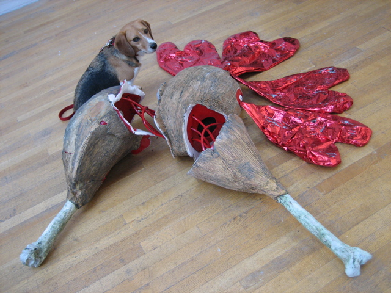

<--Previous
Up
Next-->

Drumsticks and hearts
Huxley was in to head-to-tail eating before it was cool. These aren't really edible, though; they were at the San Francisco Art Institute when we stopped in to see the Diego Rivera mural.